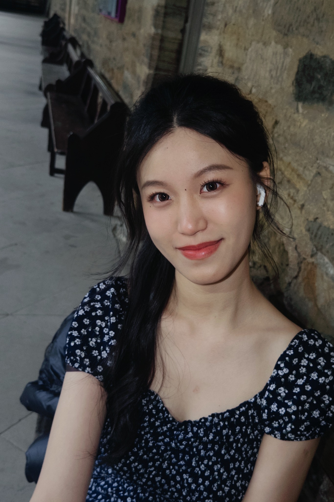

🎓
Always learning
From foundation studies to university and postgraduate learning, I'm enjoying each new chapter.
A collection of places I've been, people I've met, things I've learned and little moments I want to remember. Welcome — I'm glad you're here!
Explore my moments ↓
little moments, big memories ♡I'm Miko, a postgraduate student at University College London. This is my little online scrapbook — a place to bring together my education journey, experiences, everyday moments and personal growth.
From foundation studies to university and postgraduate learning, I'm enjoying each new chapter.
I'm collecting memories from new places, different cultures and the small discoveries along the way.
Photos and ordinary days remind me that little things can become lovely memories.
Three chapters, lots of learning, and many memories made along the way.
Warwick International Foundation Programme — Business Management
High Credit · 69%BA Business and Management
Upper Second-Class Honours (2:1)MSc People Analytics and Human-Centric Management
Currently studyingDifferent roles have helped me learn to work with people, solve problems and adapt to new situations.
Commodity Scenario Operation Specialist
Supported product data validation and algorithm-related operations, identified data mismatches, and wrote platform guides that received over 11,000 views.
Investment Development Intern
Joined industry meetings and four site visits, gaining exposure to investment analysis, IRR calculations and land premium analysis.
Business Department Officer
Helped coordinate sponsor relationships and cross-team promotion, and supported more than ten cultural exchange events.
Volunteered at Zhengzhou East Station, helping passengers navigate the station. Also worked in hotel catering, learning teamwork and customer service in a busy environment.
A little collection of everything — campus days, travels, food, friends, hobbies, quiet walks and all the lovely in-between moments. No categories, just life.